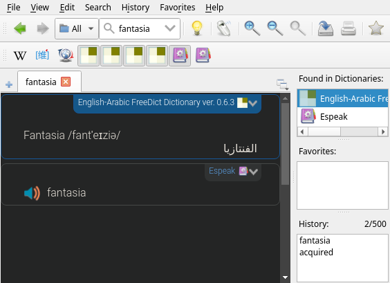

there is no lightwieght offline translator for Linux? fine, just use goldendict
Table of Contents
what is goldendict?
- goldendict is a desktop app that searchs in dictionaries for the word you typed, instead searching in a book manually, & it's very light & fast.
"just use an online translator"
- 1st reason: not all people have access to internet all time.
- 2nd reason: Russian spy get caught due to using Google Translation
"just use argostranslategui"
- naah, bro, I hate python dependencies, it's hell, you should install 1000 library for less than 100mb software.
but this is just a dictionary, not a translation app
- it fits the needs of someone who wants to learn a language, because translation apps abstract a lot of things & gives you only the final result, so, when you translate by a dictionary, you are more likely to acquire vocabularies, & to understand how the sentence formed.
setuping goldendict
installing it
if you have debian, if you have something else, use your package manager instead.
sudo apt install goldendict -ydownloading dictionaries
mkdir -p ~/.local/share/stardict/dic
cd ~/.local/share/stardict/dic
## you can visit https://download.freedict.org to select the dicts u want
wget https://download.freedict.org/dictionaries/eng-ara/0.6.3/freedict-eng-ara-0.6.3.dictd.tar.xz
wget https://download.freedict.org/dictionaries/ara-eng/0.6.3/freedict-ara-eng-0.6.3.dictd.tar.xz
wget https://download.freedict.org/dictionaries/fra-eng/0.4.1/freedict-fra-eng-0.4.1.dictd.tar.xz
wget https://download.freedict.org/dictionaries/eng-fra/0.1.6/freedict-eng-fra-0.1.6.dictd.tar.xz
tar xf ...giving goldendict the path where the dicts are
- type in the terminal
goldendict - Edit -> Dictionaries OR just click F3
- click Add... & paste
~/.local/share/stardict/dicin Directory & click Choose & then select recursive - click Rescan now & click Apply & then click OK
c o n g r a t u l a t i o n s
